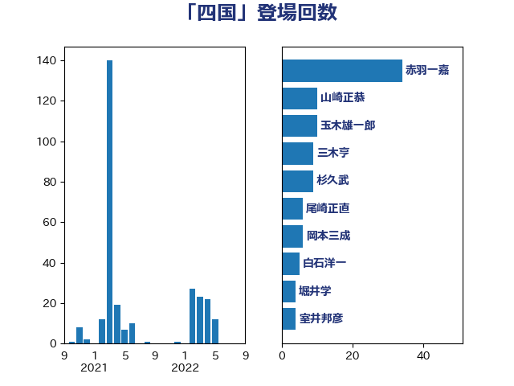

単語「四国」

| 赤羽一嘉 | 公明党 | 34 回 |
| 山崎正恭 | 公明党 | 10 回 |
| 玉木雄一郎 | 国民民主党 | 10 回 |
| 三木亨 | 自由民主党 | 9 回 |
| 杉久武 | 公明党 | 9 回 |
| 尾崎正直 | 自由民主党 | 6 回 |
| 岡本三成 | 公明党 | 6 回 |
| 白石洋一 | 立憲民主党 | 5 回 |
| 堀井学 | 自由民主党 | 4 回 |
| 室井邦彦 | 日本維新の会 | 4 回 |
| 井上哲士 | 日本共産党 | 3 回 |
| 仁木博文 | 無所属 | 3 回 |
| 伊波洋一 | 無所属 | 3 回 |
| 坂本祐之輔 | 立憲民主党 | 3 回 |
| 山本博司 | 公明党 | 3 回 |
| 岩本剛人 | 自由民主党 | 3 回 |
| 萩生田光一 | 自由民主党 | 3 回 |
| 西村康稔 | 自由民主党 | 3 回 |
| あかま二郎 | 自由民主党 | 2 回 |
| ながえ孝子 | 無所属 | 2 回 |
| 中西祐介 | 自由民主党 | 2 回 |
| 井上英孝 | 日本維新の会 | 2 回 |
| 井原巧 | 自由民主党 | 2 回 |
| 古川元久 | 国民民主党 | 2 回 |
| 杉本和巳 | 日本維新の会 | 2 回 |
| 榛葉賀津也 | 国民民主党 | 2 回 |
| 武井俊輔 | 自由民主党 | 2 回 |
| 美延映夫 | 日本維新の会 | 2 回 |
| 道下大樹 | 立憲民主党 | 2 回 |
| 野田国義 | 立憲民主党 | 2 回 |
| 金城泰邦 | 公明党 | 2 回 |
| 鈴木義弘 | 国民民主党 | 2 回 |
| 青木愛 | 立憲民主党 | 2 回 |
| 高橋千鶴子 | 日本共産党 | 2 回 |
| 一谷勇一郎 | 日本維新の会 | 1 回 |
| 上田清司 | 国民民主党 | 1 回 |
| 伊藤孝恵 | 国民民主党 | 1 回 |
| 吉田統彦 | 立憲民主党 | 1 回 |
| 塩村あやか | 立憲民主党 | 1 回 |
| 大岡敏孝 | 自由民主党 | 1 回 |
| 大島敦 | 立憲民主党 | 1 回 |
| 宮本徹 | 日本共産党 | 1 回 |
| 小島敏文 | 自由民主党 | 1 回 |
| 小沢雅仁 | 立憲民主党 | 1 回 |
| 山谷えり子 | 自由民主党 | 1 回 |
| 岡本あき子 | 立憲民主党 | 1 回 |
| 岩渕友 | 日本共産党 | 1 回 |
| 川合孝典 | 国民民主党 | 1 回 |
| 斉藤鉄夫 | 公明党 | 1 回 |
| 泉健太 | 立憲民主党 | 1 回 |
| 浜田聡 | NHK党 | 1 回 |
| 田島麻衣子 | 立憲民主党 | 1 回 |
| 田村憲久 | 自由民主党 | 1 回 |
| 畦元将吾 | 自由民主党 | 1 回 |
| 磯崎仁彦 | 自由民主党 | 1 回 |
| 秋野公造 | 公明党 | 1 回 |
| 稲津久 | 公明党 | 1 回 |
| 紙智子 | 日本共産党 | 1 回 |
| 緑川貴士 | 立憲民主党 | 1 回 |
| 緒方林太郎 | 無所属 | 1 回 |
| 落合貴之 | 立憲民主党 | 1 回 |
| 西銘恒三郎 | 自由民主党 | 1 回 |
| 谷合正明 | 公明党 | 1 回 |
| 足立敏之 | 自由民主党 | 1 回 |
| 遠藤良太 | 日本維新の会 | 1 回 |
| 野間健 | 立憲民主党 | 1 回 |
| 金子恭之 | 自由民主党 | 1 回 |